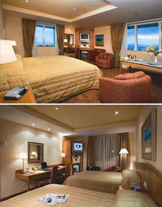

Nosso Serviços
A Golden Gates oferece sempre o melhor em qualidade nos nosso serviços, e com todo diferencial, para satisfazer nosso clientes.
Passeios Pela ponte
Nos oferecemos passeios turisco com acompanhamento de monitores que contam as historias e curiosidades da ponte, ao decorer do passeios, os passeios acontecem diariamente em tres horarios diferentes.
Hoteis
Nós adoramos fazer listas assim como todo mundo. Mas nós decidimos deixar os nossos clientes com toda a diversão.

Mas é claro que uma lista não seria o bastante e, como temos dados de centenas de hotéis, seguimos analisando nossos dados e decidimos agrupá-los em um aso lista. Os resultados podem ser vistos abaixo.
Melhores Hotéis
Passeios Diferenciados
Nos tambem oferecemos varios dipos de passeio diferenciados que podem ser escolhidos pelos nos clientes lifremente, mopntando os paseios a se gosto.
Acima voces viram alguns exemplos de passeio mutos divertidos, para maiores informações comsulte um de nosso agentes de viagens.
Restaurantes
Nos tambem oferecemos serviços de restaurante, mas se foce estiver um pouco longe da ponte pode escolher varios restaurantes confeniados a nos, que possuem os melhores serviços da região
Aqui vai a lista dos melhores restaurantes da cidade:
Melhores Bares
Restaurante
{kind=link}
{kind=link}
{kind=link}
{kind=link}
{kind=link}
{kind=link}
{kind=link}
{kind=link}
{kind=link}
{kind=link}